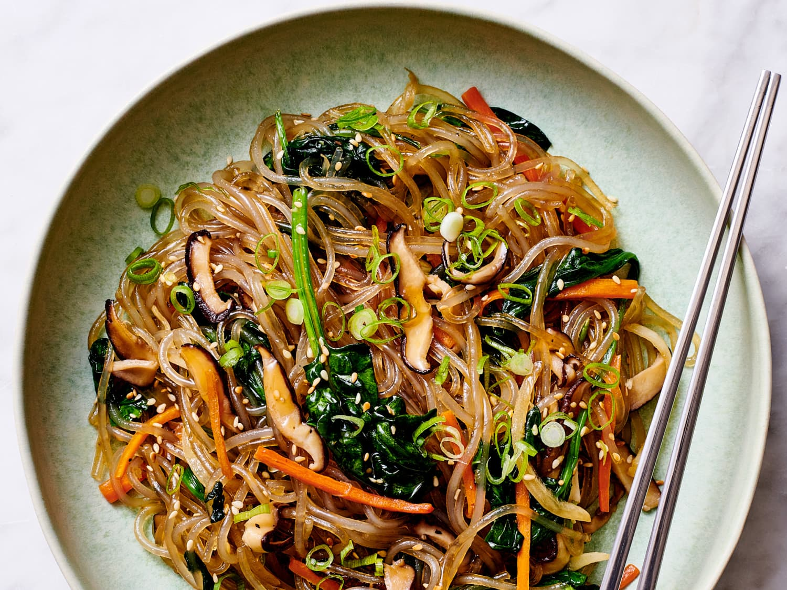

Japchae

Description
Japchae is a savory and slightly sweet dish of stir-fried glass noodles and vegetables that is popular in Korean cuisine. Once a royal dish, japchae is now one of the most popular traditional celebration dishes, often served on special occasions, such as weddings, birthdays, and holidays. It is popular due to the eas of bulk preparation and flexible serving: japchae can be served warm, at room temperature, or cold from the refrigerator.
Japchae consists of two syllables, jap meaning mixed and chae meaning vegetable.
Ingredients
- dangmyeon 'sweet potato starch noodles'
- mushrooms
- spinach
- carrots
- bell pepper
- sesame oil
- soy sauce
Steps
- Cut the carrot into matchsticks. Thinly slice the onion. Slice the bell pepper into strips.
- In a large pan, bring about 5 cups of water to a boil and cook the noodles until completely translucent. It should take about 6 to8 minutes. Drain and rinse the noodles under cold running water.
- Boil the spinach until wilted. Drain adn shock in cold water. Squeeze out water and season with salt.
- Stir fry vegetables. Then transfer them into the bowl with noodles and spinach.
- Add soy sauce, seasame oil, and sugar. Mix well.